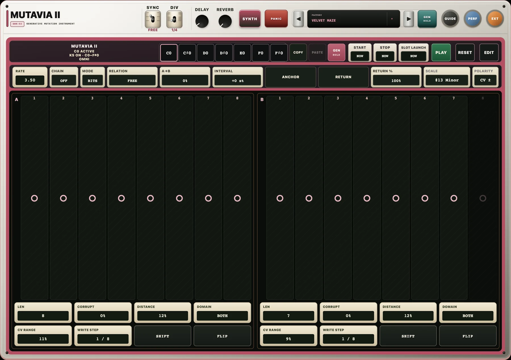
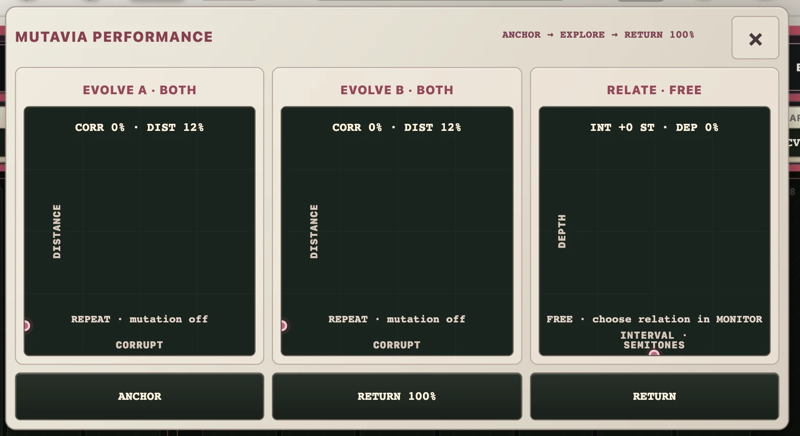
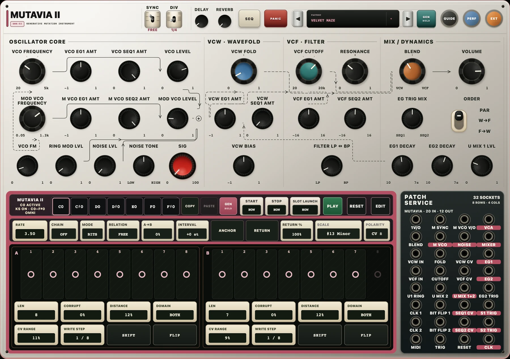

Generative semi-modular synth · Manual
MUTAVIA II
Start with a repeating rhythm. Mutate its notes and pulses, link the lanes, then return to a pattern you saved.
 Enlarge
Enlarge
First pattern
- Load Velvet Maze
Find Velvet Maze in the Factory presets.
- Start the lanes
Open SEQ and press PLAY.
- Change the cycle
Give lanes A and B different LEN values. Listen as their cycles move in and out of alignment.
Shape the voice
- Main VCO · Mod VCO · Noise
- VCW and VCF · ORDER
- BLEND · VCA
- VCO FM · RING MOD LVL
- Add frequency modulation and mix in ring modulation from the oscillator pair.
- FOLD · BIAS
- Shape the amount and symmetry of the wavefolding in the VCW.
- ORDER · FILTER LP ↔ BP · BLEND
- Run the wavefolder and filter in parallel or in either series order. Morph from low-pass to band-pass, and set the blend.
Edit A and B


- Step cells · LEN
- Tap to toggle steps. Set each lane’s loop length independently.
- CORRUPT · DISTANCE · DOMAIN
- Set how much a lane mutates and how far pitch can move. Choose rhythm, pitch or both as the target.
- RELATION · A→B
- FREE keeps the lanes independent. FOLLOW, MIRROR and CONTRARY let A influence B as you raise A→B.
Perform with the XY pads


- EVOLVE A · EVOLVE B
- Drag right for more CORRUPT and up for more pitch DISTANCE. In RHYTHM, only CORRUPT changes the result. In BOTH, if every step is off, enable one or raise CORRUPT above 50%.
- RELATE
- Drag horizontally for −12 to +12 semitones and vertically for relation depth. Choose FOLLOW, MIRROR or CONTRARY to hear the link.
- ANCHOR · RETURN
- Save a starting pattern with ANCHOR. RETURN moves toward it by the selected percentage. At 100%, it recalls the saved pattern.
Patch the lanes


- SEQ1 CV OUT → FOLD IN
- Use lane A to move the wavefolder. Set FOLD and the VCW modulation amount to hear the movement.
- SEQ2 CV OUT → CUTOFF IN
- Use lane B to modulate the filter. Adjust CUTOFF and resonance to hear where it moves.
- EXT → Routing
- Show the internal routing labels when tracing a patch. FLAVOUR is also in EXT.
Recall, generate and sync
- C0–F♯0 · COPY / PASTE
- Select a sequence slot. Copy the source, recall the destination and paste.
- GEN · HOLD
- Use the GEN beside the slots to develop the selected sequence. Hold it to open its settings. Header GEN generates a whole patch.
- SYNC · DIV · SLOT LAUNCH
- Choose the clock and division. Select NOW for immediate slot recall or a musical boundary for a queued launch.